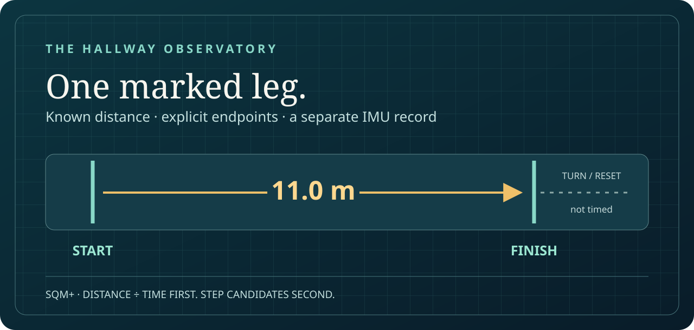

RANDALL YOUNG · HOW MUCH? ENOUGH?
Project Atlas
Randall Young’s public working archive of experiments, instruments, and the ideas that connect them.
Flagship activity · Experience before equation
The Singing Rule
Pluck a ruler at the edge of a table. Follow the original bench experiment from a Bluetooth trace to a model you can test yourself.


SQM+ Hallway ObservatoryEleven meters, a stopwatch, and a step detector under test.

Virtual InstrumentsFive wireless builds and the dashboards that make them usable.
Read the Atlas
How much? Enough? Measure what happened, then decide whether it was enough for the purpose.
- Ideas · the principles and designs that recur across the work
- Projects · what was built, what is still under test, and where to find it
- Repositories · search all 89 public repositories, including earlier versions and upstream forks